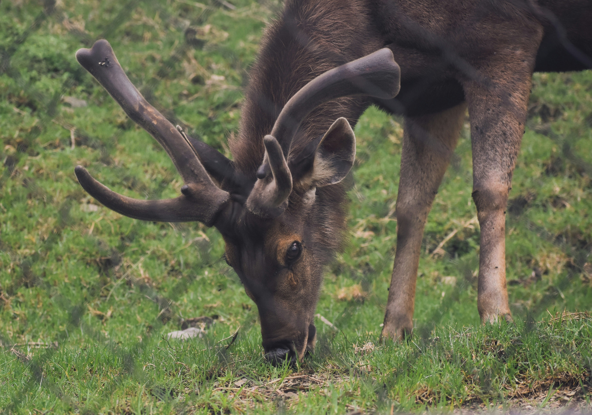

Top three activities to do in Nanital

Enjoy boating in Naini Lake
Rent a paddle or row boat and take in the beauty of the hills around you.

Visit G.B. Pant High Altitude Zoo
See rare Himalayan wildlife like the snow leopard, Himalayan bear, and red panda in their natural environment.
Explore St. John in the Wilderness Church
Step inside this historic 19th-century stone church, surrounded by tall deodar trees, for a peaceful retreat.